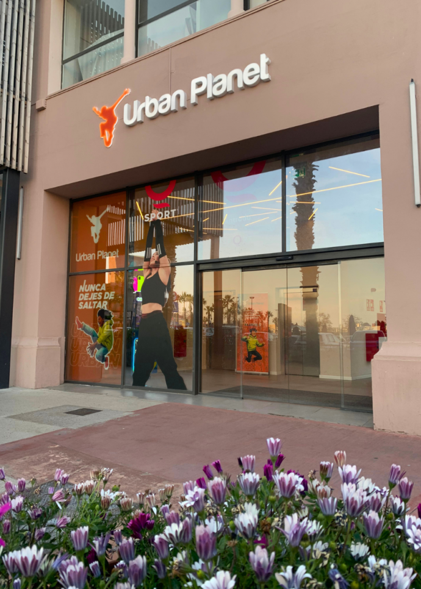
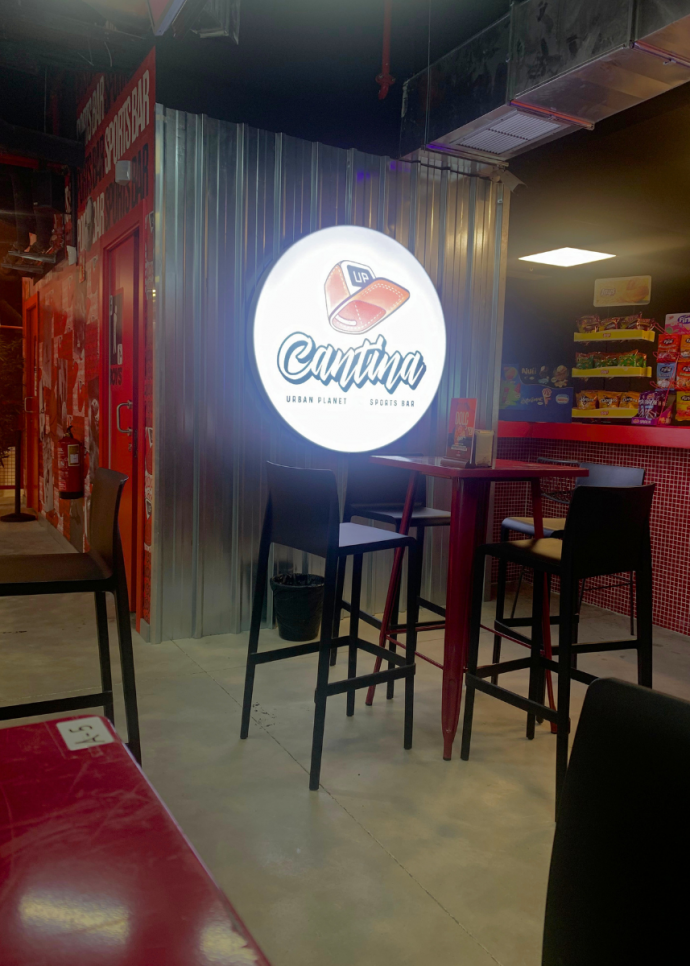
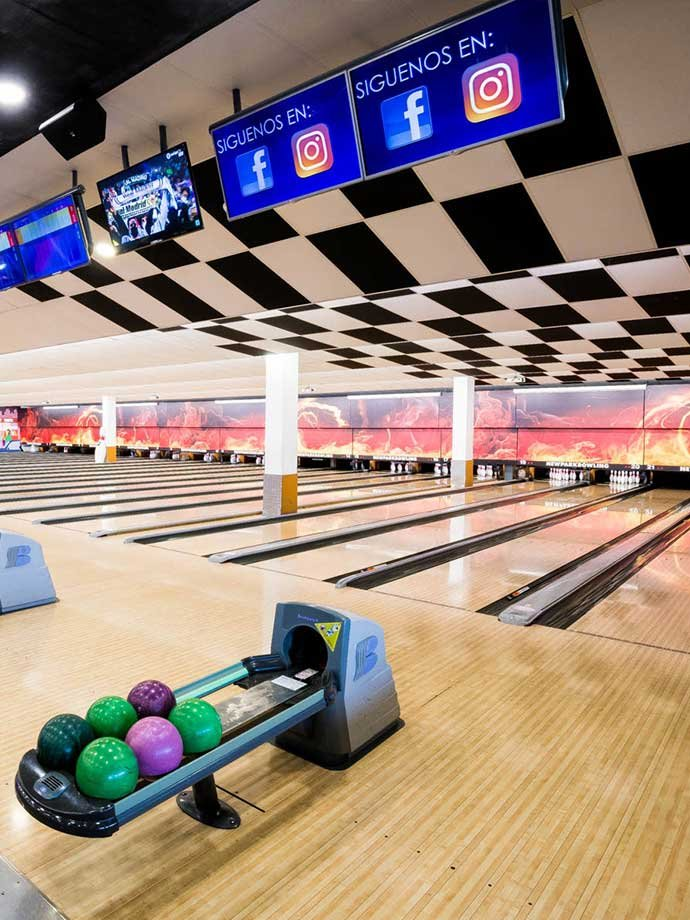

Opció C · Parc Vallès
Salting + bitlles en un mateix recinte
La proposta més fàcil de combinar: tot és al Parc Vallès i no cal canviar de zona. Ideal si es vol una sortida molt lúdica i amb poca logística.
Urban Planet
Què és? Un parc de llits elàstics. Es salta, es cau sobre matalassos, es fan reptes tipus ninja i zones com airbag, foam pit o dodgeball.
Durada: 60, 90 o 120 minuts.
Preu: 11, 14 o 17 euros. Mitjons obligatoris: 2,50 euros.
Horari: dilluns-dijous 17.00-21.00; divendres 17.00-22.00; no lectius també 12.00-14.00.
New Park Bowling
Què és? Una bolera. Cada alumne llança boles per tombar bitlles i competeix per punts en petits grups.
Durada: una partida pot allargar-se força si hi ha 7-8 persones per pista.
Preu: 5,50 euros de dilluns a dijous; sabates incloses.
Horari: dilluns-dijous 16.00-00.00; divendres 16.00-01.00.


